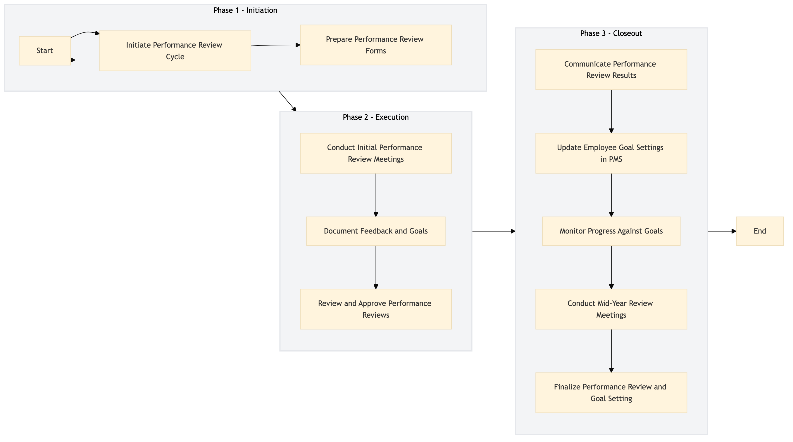

| Role | Steps |
|---|---|
| Human Resources Manager | 1.1 1.2 3.3 |
| Manager/Supervisor | 2.1 2.2 2.3 3.1 3.2 3.4 3.5 |
| Step | Name | Role | System | Input | Output | KPI | Dec? | Exc? | Pain Point / Risk |
|---|---|---|---|---|---|---|---|---|---|
| 1.1 | Initiate Performance Review Cycle | Human Resources Manager | Workday HCM | Performance review calendar and guidelines | Scheduled performance review dates for all employees | Less than 2 weeks to schedule all reviews | N | Y | Ensuring timely scheduling of all reviews |
| 1.2 | Prepare Performance Review Forms | Human Resources Manager | Workday HCM | Performance review template and employee data | Customized performance review forms for each employee | Less than 1 week to prepare all forms | N | Y | Handling large volumes of employee data |
| 2.1 | Conduct Initial Performance Review Meetings | Manager/Supervisor | Oracle OPERA Cloud | Performance review forms and employee performance data | Initial feedback notes and goal setting discussions | Less than 30 minutes per meeting | Y | N | Balancing the time spent on each review |
| 2.2 | Document Feedback and Goals | Manager/Supervisor | Oracle OPERA Cloud, Workday HCM | Feedback notes and goal setting discussions | Updated performance review forms with documented feedback and goals | Less than 1 hour per employee | N | Y | Ensuring consistency in documentation |
| 2.3 | Review and Approve Performance Reviews | Human Resources Manager | Workday HCM | Completed performance review forms | Approved performance reviews | Less than 1 week to approve all reviews | Y | N | Handling discrepancies in feedback |
| 3.1 | Communicate Performance Review Results | Manager/Supervisor | Oracle OPERA Cloud, Workday HCM | Approved performance reviews | Employee communication of review results and goal setting discussions | Less than 1 week to communicate all results | N | Y | Handling sensitive feedback |
| 3.2 | Update Employee Goal Settings in PMS | Manager/Supervisor | Oracle OPERA Cloud | Approved performance reviews and goal setting discussions | Updated employee goal settings in Oracle OPERA Cloud | Less than 1 hour per employee | N | Y | Ensuring alignment with hotel objectives |
| 3.3 | Monitor Progress Against Goals | Manager/Supervisor | Oracle OPERA Cloud, Workday HCM | Updated employee goal settings and performance data | Progress reports on goal achievement | Weekly progress check-ins | Y | N | Tracking individual progress |
| 3.4 | Conduct Mid-Year Review Meetings | Manager/Supervisor | Oracle OPERA Cloud, Workday HCM | Progress reports on goal achievement | Mid-year feedback notes and adjustments to goals | Less than 30 minutes per meeting | Y | N | Balancing mid-year reviews with other responsibilities |
| 3.5 | Finalize Performance Review and Goal Setting | Manager/Supervisor | Oracle OPERA Cloud, Workday HCM | Mid-year feedback notes and adjustments to goals | Finalized performance review forms with updated goal settings | Less than 1 week to finalize all reviews | Y | N | Handling last-minute changes |
A structured process document for HR-TL-05 — Performance Review & Goal Setting at a Marriott full-service hotel. This process ensures that employees receive regular feedback and set clear goals aligned with the hotel's objectives.